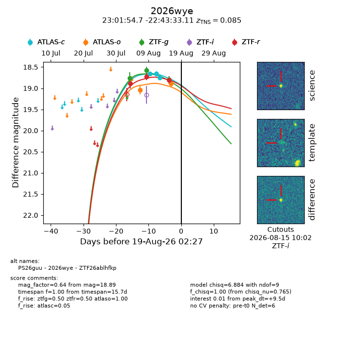
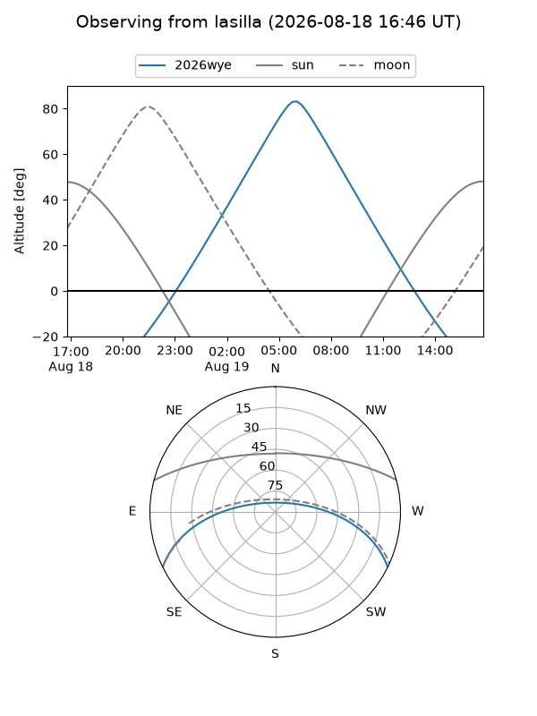
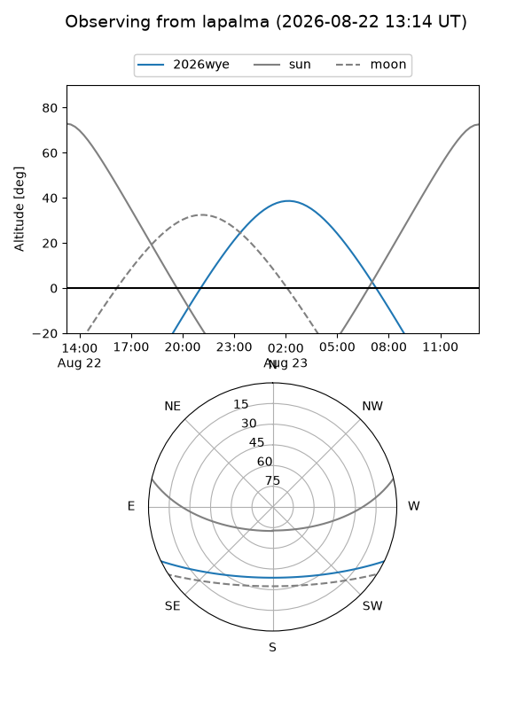
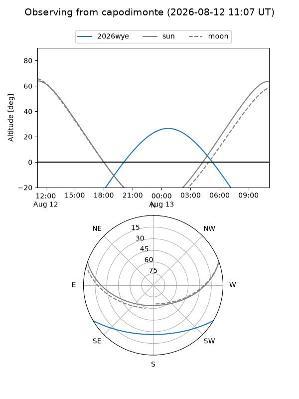
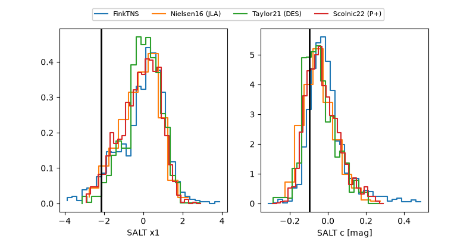

2026wye
Target 2026wye at 2026-08-19 02:30
Aliases and brokers:
FINK-ZTF: ztf.fink-portal.org/ZTF26ablhfkp
Lasair-ZTF: lasair-ztf.lsst.ac.uk/objects/ZTF26ablhfkp
ALeRCE-ZTF: alerce.online/object/ZTF26ablhfkp
YSE-PZ: ziggy.ucolick.org/yse/transient_detail/2026wye
TNS name: wis-tns.org/object/2026wye
Direct TNS query: direct search
alt names
ZTF26ablhfkp (ztf,fink_ztf)
2026wye (tns,yse)
PS26guu (panstarrs)
Coordinates:
equatorial (ra, dec) = 345.4778,-22.72586
equatorial (HMS+DMS) = 23:01:54.67,-22:43:33.11
galactic (l, b) = (36.9287,-64.83389)
Flags:
TNS type: SN Ia
TNS redshift: 0.0850
peak dt: +9.5
Photometry:
last atlasc=18.75, atlaso=18.89, ztfg=18.79, ztfr=18.81
3 atlasc, 2 atlaso, 3 ztfg, 3 ztfr detections
Lightcurve

Visibility



Additional plots
